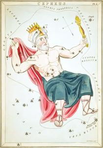
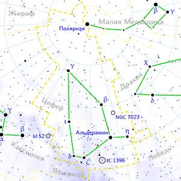

ИсторияДревнее созвездие. Греки приписывали его Евдоксу, но он, вероятно, только автор первого описания созвездия. Созвездие включено в каталог звёздного неба Клавдия Птолемея «Альмагест». Мифический эфиопский царь Цефей (Кефей) был супругом Кассиопеи и отцом Андромеды. На арабских картах созвездие носит имя Аль-Мультагиб, что значит «пламенный» или «пылкий». Одной ногой герой упирается в полюс, второй — в Малую Медведицу. На голове у него чалма и корона. В одной руке он держит свой плащ, в другой — свой царский скипетр. НаблюдениеЦефей расположен между Кассиопеей и Малой Медведицей. α Цефея находится на прямой, соединяющей α и β Кассиопеи, на расстоянии вчетверо большем, чем расстояние между этими звёздами. Наилучшие условия для наблюдений в июле — сентябре, однако ввиду большого северного склонения созвездие видно на всей территории России круглый год. О созвездииЦефе́й (лат. Cepheus) — созвездие Северного полушария неба, имеющее форму неправильного пятиугольника. Южная часть созвездия находится на Млечном пути. Занимает на небе площадь 587,8 квадратного градуса и содержит 148 звёзд, видимых невооружённым глазом. |
 |
|  | |